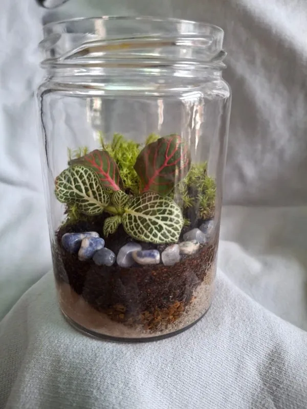
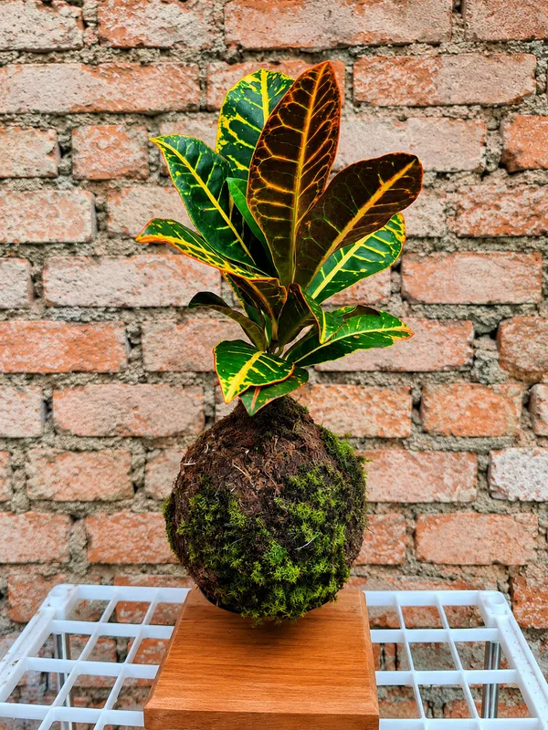
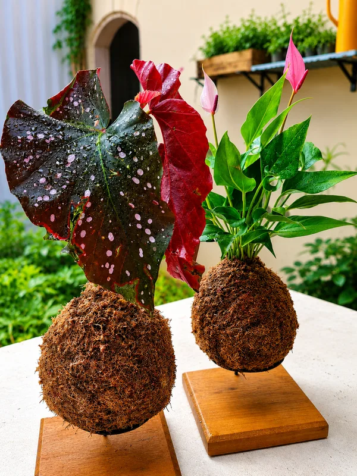

Mais verde.
Mais vida.
Mais significado.
Terrários, kokedamas e lembranças vivas feitos artesanalmente para transformar seu espaço — e o dia de quem você presenteia.


Um pequenomundo vivo.
Quatro caminhos.
Uma conexão com a natureza.
Conheça cada coleção, inspire-se nas peças e reúna suas favoritas em um único orçamento.

Seu espaço merece
um respiro de natureza.
Texturas, folhas e formas orgânicas. Cada composição aproxima o verde da rotina, seja em casa, no escritório ou em um cantinho especial.
Conhecer kokedamas ↗COMPLETE A COMPOSIÇÃO Explore nossos suportes ↗
Alguns gestos
merecem criar raízes.
Lembrancinhas, pingentes e brindes ecológicos para transformar o agradecimento em algo que fica.
Ver lembrancinhas e brindes ↗Escolha com os olhos.
Converse com a gente.
Encontre suas referências
Explore as coleções e amplie as fotos para olhar cada detalhe.
Monte sua seleção
Adicione peças de diferentes categorias e ajuste as quantidades.
Peça seu orçamento
Envie a lista pelo WhatsApp e confirme valores, prazos e entrega.
Vamos encontrar o seu verde?
Escolha suas referências e converse com a gente sobre sua ideia.
Uma boa conversa
faz parte do cuidado.
Como saber o valor de uma peça?
Adicione suas referências ao orçamento e envie sua seleção pelo WhatsApp. Modelos, valores e disponibilidade são confirmados no atendimento.
Vocês entregam na minha cidade?
Informe sua cidade e estado para consultar opções de entrega ou retirada, custos e prazos antes de fechar a encomenda.
A peça será exatamente igual à foto?
As fotos apresentam referências do catálogo. Como são composições naturais e artesanais, confirme plantas, dimensões e acabamento disponíveis para o seu pedido.
Quais cuidados devo ter com as plantas?
Os cuidados variam conforme a espécie e a montagem. Peça as orientações específicas de luz e rega para a peça escolhida.